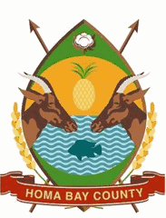
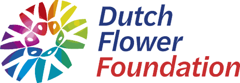

JUDES Community Based Organization was founded and registered in 2018 in Homa Bay County, inspired by St. Jude, the patron of the desperate. It was established to address critical gaps in underserved rural communities, where health, education, and social equity challenges were deeply interconnected as well as realigning with the United Nations SDGs 1, 3 & 10.
Our beginnings were rooted in collaboration between health professionals, disability advocates, and community leaders determined to break systemic barriers such as stigma, lack of accessible services, and cultural taboos. Since then, we have grown into a trusted force for grassroots transformation and advocacy.
To prioritize the needs of the vulnerable and less fortunate by addressing interconnected challenges in education, health, economic empowerment, and social justice. Our mission is to bridge gaps that limit opportunity, eliminate barriers to access, and nurture environments where dignity, respect, and self-sufficiency are at the core of development.
We achieve this by engaging with local communities, designing sustainable programs, and promoting collective action that strengthens resilience and drives lasting social transformation.
A compassionate and inclusive community where everyone has equal access to resources, opportunities, and support systems needed to thrive. We envision a society where poverty, stigma, and inequality no longer hinder progress, and individuals are empowered to live with dignity, purpose, and fulfillment.
By fostering solidarity, innovation, and accountability, we aim to inspire future generations and build a culture that leaves no one behind.
We care deeply about the well-being of our community members, offering support and kindness especially in times of vulnerability.
We believe in the potential of individuals to create positive change. Through skills, knowledge, and resources, we enable people to take charge of their own development.
We celebrate diversity and ensure equal opportunities for all, regardless of gender, ability, or background. Inclusivity drives the strength and unity of our community.
We operate with transparency, accountability, and ethics in every program and decision, building trust within the communities we serve.
We believe in collaboration, partnerships, and collective action. By working together, we achieve greater impact and sustainable solutions.

